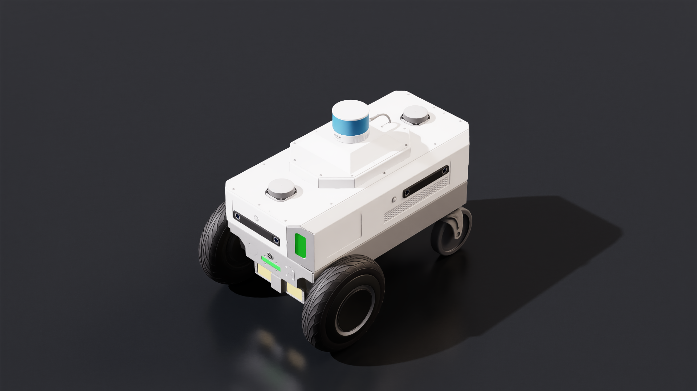
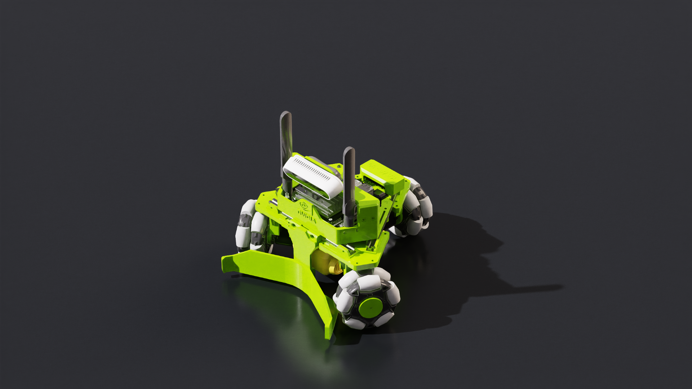
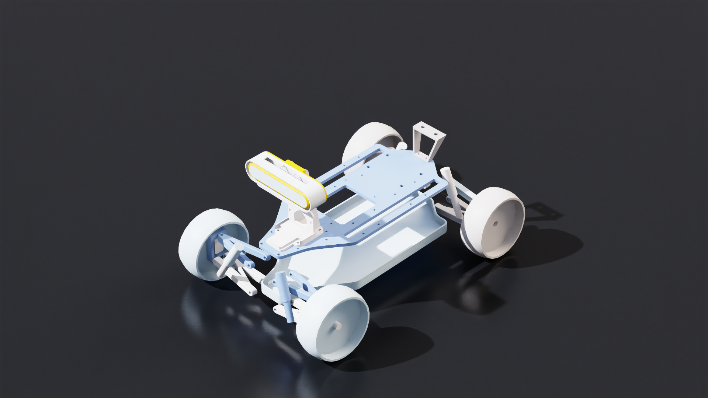
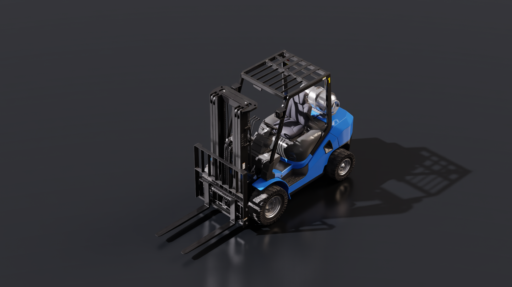

移动机器人控制器#
注意
对于新的控制器开发，请考虑使用较新的实验性运动生成 API，位于 运动生成（实验性），它提供了改进的接口和附加功能。
差速控制器#
差速控制器利用左右车轮之间的速度差来控制机器人的线速度和角速度。差速机器人支持原地转向，并应用于 NVIDIA Nova Carter 机器人。


数学原理#
其中 \(\omega\) 是期望角速度，\(V\) 是期望线速度，\(r\) 是车轮半径，\(l_{tw}\) 是车轮之间的距离。 \(\omega_R\) 是期望的右轮角速度，\(\omega_L\) 是期望的左轮角速度。
OmniGraph 节点#
输入命令 |
描述 |
|---|---|
execIn |
输入执行 |
wheelRadius |
车轮半径（单位：米） |
wheelDistance |
车轮之间的距离，单位为米 |
dt |
时间增量，单位为秒 |
maxAcceleration |
前进和后退时的最大线性加速度，单位为 m/s^2，0.0 表示未设置 |
maxDeceleration |
机器人的最大线性减速度，单位为 m/s^2，0.0 表示未设置 |
maxAngularAcceleration |
机器人的最大角加速度，单位为 rad/s^2，0.0 表示未设置 |
maxLinearSpeed |
机器人允许的最大线性速度，单位为 m/s，0.0 表示未设置 |
maxAngularSpeed |
机器人允许的最大角速度，单位为 rad/s，0.0 表示未设置 |
maxWheelSpeed |
最大车轮速度，单位为 rad/s |
期望线性速度 |
期望线性速度，单位为 m/s |
期望角速度 |
期望角速度，单位为 rad/s |
输出命令 |
描述 |
|---|---|
VelocityCommand |
左右车轮的速度命令，单位为 m/s 和 rad/s |
注意
VelocityCommand 的顺序为 [left_wheel_velocity, right_wheel_velocity]。将此输出连接到 Articulation Controller 时，请按左轮、右轮的相同顺序列出车轮关节名称或索引。
Python#
以下代码片段为 NVIDIA Jetbot 设置差速控制器，其车轮半径为 3 厘米，底盘宽度为 11.25 厘米，线性速度为 0.3 m/s，角速度为 1.0 rad/s。
# Reference: source/standalone_examples/api/isaacsim.robot.wheeled_robots.examples/jetbot_differential_move.py
# Timeline: use app_utils (play/stop/is_playing) instead of omni.timeline. Use app_utils.update_app(steps=N) instead of for-loop simulation_app.update(); same for other mobile_robot_controllers examples.
import argparse
parser = argparse.ArgumentParser()
parser.add_argument("--test", action="store_true")
args, _ = parser.parse_known_args()
from isaacsim import SimulationApp
simulation_app = SimulationApp({"headless": False})
import isaacsim.core.experimental.utils.app as app_utils
import isaacsim.core.experimental.utils.stage as stage_utils
from isaacsim.core.experimental.objects import DomeLight
from isaacsim.core.simulation_manager import SimulationManager
from isaacsim.robot.experimental.wheeled_robots.controllers import DifferentialController
from isaacsim.robot.experimental.wheeled_robots.robots import WheeledRobot
from isaacsim.storage.native import get_assets_root_path
DEVICE = "cpu"
assets_root_path = get_assets_root_path()
if assets_root_path is None:
raise RuntimeError("Could not find Isaac Sim assets folder")
jetbot_asset_path = assets_root_path + "/Isaac/Robots_Multiphysics/NVIDIA/Jetbot/jetbot.usda"
stage_utils.set_stage_up_axis("Z")
stage_utils.set_stage_units(meters_per_unit=1.0)
stage_utils.add_reference_to_stage(
usd_path=assets_root_path + "/Isaac/Environments/Grid/default_environment.usd",
path="/World/ground",
)
dome_light = DomeLight("/World/DomeLight")
dome_light.set_intensities(500)
my_jetbot = WheeledRobot(
paths="/World/Jetbot",
wheel_dof_names=["left_wheel_joint", "right_wheel_joint"],
usd_path=jetbot_asset_path,
positions=[0.0, 0.0, 0.05],
)
my_controller = DifferentialController(wheel_radius=0.03, wheel_base=0.1125)
# Setup simulation and disable GPU dynamics for this example.
SimulationManager.setup_simulation(dt=1.0 / 60.0, device=DEVICE)
physics_scene = SimulationManager.get_physics_scenes()[0]
physics_scene.set_enabled_gpu_dynamics(False)
app_utils.play()
app_utils.update_app(steps=10)
# Simulation loop: apply [linear_speed, angular_speed]; e.g. 0.3 m/s, 1.0 rad/s.
linear_speed = 0.3
angular_speed = 1.0
step_count = 0
max_test_steps = 60
while simulation_app.is_running():
simulation_app.update()
step_count += 1
if app_utils.is_playing():
velocities = my_controller.forward([linear_speed, angular_speed])
my_jetbot.apply_wheel_actions(velocities)
if args.test and step_count >= max_test_steps:
break
app_utils.stop()
simulation_app.close()
全向控制器#
全向控制器计算全向移动机器人所需的关节驱动指令，以产生机器人指定的前进、横向和偏航速度。NVIDIA Kaya 机器人是全向机器人的一个示例。 该问题被构建为一个二次规划问题，旨在最小化作用于质心的残余“净力”。


注意
机器人 prim 的轮子关节必须具有额外的属性，以定义麦克纳姆轮的滚子角度和半径。
joint_prim = stage.GetPrimAtPath("/World/robot/wheel_joint")
joint_prim.CreateAttribute("isaacmecanumwheel:radius", Sdf.ValueTypeNames.Float).Set(0.12)
joint_prim.CreateAttribute("isaacmecanumwheel:angle", Sdf.ValueTypeNames.Float).Set(10.3)
HolonomicRobotUsdSetup 类可自动执行此过程。
数学#
代价函数定义为机器人关节的控制输入。通过最小化控制输入，可以减少多余的加速度。
等式约束由线速度和角速度目标速度输入设定：
OmniGraph 节点#
输入命令 |
描述 |
|---|---|
execIn |
输入执行 |
wheelRadius |
轮子半径数组（单位：米） |
wheelPositions |
轮子相对于底盘质心的位置（单位：米） |
wheelOrientations |
轮子相对于底盘质心坐标系的朝向 |
mecanumAngles |
麦克纳姆轮相对于轮子旋转轴的角度（单位：弧度） |
wheelAxis |
轮子的旋转轴 |
upAxis |
向上轴（默认为 z 轴） |
车辆的命令速度 |
x 和 y 方向的速度（m/s）以及旋转速度（rad/s） |
maxLinearSpeed |
车辆允许的最大速度（单位：m/s） |
maxAngularSpeed |
车辆允许的最大角旋转速度，单位为 rad/s |
maxWheelSpeed |
车轮关节允许的最大旋转速度，单位为 rad/s |
linearGain |
线速度输入的增益 |
angularGain |
角速度输入的增益 |
输出命令 |
描述 |
|---|---|
jointVelocityCommand |
车轮关节的速度命令，单位为 rad/s |
Python#
以下代码片段计算了命令速度为 [1.0, 1.0, 0.1] 的三轮 NVIDIA Kaya 全向机器人的关节速度输出
# Reference: source/standalone_examples/api/isaacsim.robot.wheeled_robots.examples/kaya_holonomic_move.py
import argparse
parser = argparse.ArgumentParser()
parser.add_argument("--test", action="store_true")
args, _ = parser.parse_known_args()
from isaacsim import SimulationApp
simulation_app = SimulationApp({"headless": False})
import isaacsim.core.experimental.utils.app as app_utils
import isaacsim.core.experimental.utils.stage as stage_utils
from isaacsim.core.experimental.objects import DomeLight
from isaacsim.core.simulation_manager import SimulationManager
from isaacsim.robot.experimental.wheeled_robots.controllers import HolonomicController
from isaacsim.robot.experimental.wheeled_robots.robots import (
HolonomicRobotUsdSetup,
WheeledRobot,
)
from isaacsim.storage.native import get_assets_root_path
DEVICE = "cpu"
assets_root_path = get_assets_root_path()
if assets_root_path is None:
raise RuntimeError("Could not find Isaac Sim assets folder")
kaya_asset_path = assets_root_path + "/Isaac/Robots_Multiphysics/NVIDIA/Kaya/kaya.usda"
stage_utils.set_stage_up_axis("Z")
stage_utils.set_stage_units(meters_per_unit=1.0)
stage_utils.add_reference_to_stage(
usd_path=assets_root_path + "/Isaac/Environments/Grid/default_environment.usd",
path="/World/ground",
)
# Add dome light to illuminate the whole environment (not just one spot)
dome_light = DomeLight("/World/DomeLight")
dome_light.set_intensities(500)
my_kaya = WheeledRobot(
paths="/World/Kaya",
wheel_dof_names=["axle_0_joint", "axle_1_joint", "axle_2_joint"],
usd_path=kaya_asset_path,
positions=[0.0, 0.0, 0.02],
orientations=[1.0, 0.0, 0.0, 0.0],
)
# HolonomicRobotUsdSetup reads wheel geometry from USD for the controller.
kaya_setup = HolonomicRobotUsdSetup(
robot_prim_path=my_kaya.paths[0],
com_prim_path="/World/Kaya/base_link/control_offset",
)
(
wheel_radius,
wheel_positions,
wheel_orientations,
mecanum_angles,
wheel_axis,
up_axis,
) = kaya_setup.get_holonomic_controller_params()
my_controller = HolonomicController(
wheel_radius=wheel_radius,
wheel_positions=wheel_positions,
wheel_orientations=wheel_orientations,
mecanum_angles=mecanum_angles,
wheel_axis=wheel_axis,
up_axis=up_axis,
)
# Setup simulation and disable GPU dynamics for this example.
SimulationManager.setup_simulation(dt=1.0 / 60.0, device=DEVICE)
physics_scene = SimulationManager.get_physics_scenes()[0]
physics_scene.set_enabled_gpu_dynamics(False)
app_utils.play()
app_utils.update_app(steps=10)
# Simulation loop: apply [forward, lateral, yaw]; e.g. 1.0, 1.0, 0.1.
command = [1.0, 1.0, 0.1]
step_count = 0
max_test_steps = 60
while simulation_app.is_running():
simulation_app.update()
step_count += 1
if app_utils.is_playing():
velocities = my_controller.forward(command)
my_kaya.apply_wheel_actions(velocities)
if args.test and step_count >= max_test_steps:
break
app_utils.stop()
simulation_app.close()
阿克曼控制器#
阿克曼控制器通常用于具有转向轮的机器人，NVIDIA leatherback 机器人就是转向轮机器人的一个示例。 Isaac Sim 中的阿克曼控制器假设已提供期望的转向角度和线速度，并基于机器人几何结构


数学原理#
计算左右转向轮之间的转向角度偏移：
其中 \(R_{icr}\) 是到瞬时旋转中心的半径，\(\theta_{steer}\) 是期望的转向角度，\(l_{wb}\) 是前后轴之间的距离（轴距），\(l_{tw}\) 是轮距
计算各个车轮的速度（前轮转向情况）：
第一步是计算车轮与瞬时旋转中心之间的距离。
注意
对于 \(\pm\)，靠近 \(R_{icr}\) 的车轮使用 \(-\)，远离 \(R_{icr}\) 的车轮使用 \(+\)
然后可以计算期望的车轮速度
其中 \(V_{desired}\) 是期望的线速度，\(r_{front}\) 是期望的前轮半径，\(r_{rear}\) 是期望的后轮半径。
OmniGraph 节点#
输入命令 |
描述 |
|---|---|
execIn |
输入执行 |
acceleration |
机器人的期望前向加速度，单位为 m/s^2 |
speed |
期望的前向速度，单位为 m/s |
steeringAngle |
期望的转向角，单位为弧度。默认情况下，对于前轮驱动，正值表示向左转 |
currentLinearVelocity |
机器人当前的线速度，单位为 m/s |
wheelBase |
机器人前后轴之间的距离，单位为米 |
trackWidth |
机器人左右后轮之间的距离，单位为米 |
turningWheelRadius |
机器人前轮的半径，单位为米 |
maxWheelVelocity |
机器人车轮的最大角速度，单位为 rad/s |
invertSteering |
对于后轮转向机器人（如叉车），请设置为 true。此类机器人的转向关节驱动后轴，而前轮保持固定朝向。 |
useAcceleration |
使用加速度作为输入。设置为 false 以改用速度作为输入。 |
maxWheelRotation |
前轮的最大旋转角度（弧度） |
dt |
仿真步长的时间增量 |
输出命令 |
描述 |
|---|---|
execOut |
输出执行 |
leftWheelAngle |
左侧转向轮的角度（弧度） |
rightWheelAngle |
右侧转向轮的角度（弧度） |
wheelRotationVelocity |
转向轮的角速度（rad/s） |
Python#
以下 Python 代码片段为 NVIDIA Leatherback 机器人创建一个 Ackermann 控制器，其轴距为 1.65 米，轮距为 1.25 米，车轮半径为 0.25 米，并向其发送 1.1 m/s 的期望前进速度和 0.1 rad 的转向角。
# Ackermann steering example using the experimental API (no core World).
# Uses Articulation from core.experimental.prims and AckermannController from
# isaacsim.robot.experimental.wheeled_robots.
import argparse
parser = argparse.ArgumentParser()
parser.add_argument("--test", action="store_true")
args, _ = parser.parse_known_args()
from isaacsim import SimulationApp
simulation_app = SimulationApp({"headless": False})
import isaacsim.core.experimental.utils.app as app_utils
import isaacsim.core.experimental.utils.stage as stage_utils
from isaacsim.core.experimental.objects import DomeLight
from isaacsim.core.experimental.prims import Articulation
from isaacsim.core.simulation_manager import SimulationManager
from isaacsim.robot.experimental.wheeled_robots.controllers import AckermannController
from isaacsim.storage.native import get_assets_root_path
DEVICE = "cpu"
assets_root_path = get_assets_root_path()
if assets_root_path is None:
raise RuntimeError("Could not find Isaac Sim assets folder")
leatherback_asset_path = assets_root_path + "/Isaac/Robots_Multiphysics/NVIDIA/Leatherback/leatherback.usda"
leatherback_prim_path = "/World/Leatherback"
stage_utils.set_stage_up_axis("Z")
stage_utils.set_stage_units(meters_per_unit=1.0)
stage_utils.add_reference_to_stage(
usd_path=assets_root_path + "/Isaac/Environments/Grid/default_environment.usd",
path="/World/ground",
)
dome_light = DomeLight("/World/DomeLight")
dome_light.set_intensities(500)
stage_utils.add_reference_to_stage(usd_path=leatherback_asset_path, path=leatherback_prim_path)
my_leatherback = Articulation(leatherback_prim_path)
# Steering joints (position control) and wheel joints (velocity control)
steering_joint_names = [
"Knuckle__Upright__Front_Left",
"Knuckle__Upright__Front_Right",
]
wheel_joint_names = [
"Wheel__Knuckle__Front_Left",
"Wheel__Knuckle__Front_Right",
"Wheel__Upright__Rear_Left",
"Wheel__Upright__Rear_Right",
]
steering_dof_indices = my_leatherback.get_dof_indices(steering_joint_names)
wheel_dof_indices = my_leatherback.get_dof_indices(wheel_joint_names)
wheel_base = 1.65
track_width = 1.25
wheel_radius = 0.25
desired_forward_vel = 1.1 # m/s
desired_steering_angle = 0.3 # rad
acceleration = 0.0
steering_velocity = 0.0
dt = 0.0
controller = AckermannController(
wheel_base=wheel_base,
track_width=track_width,
front_wheel_radius=wheel_radius,
back_wheel_radius=wheel_radius,
)
# Command: [steering_angle, steering_angle_velocity, speed, acceleration, dt]
joint_positions, joint_velocities = controller.forward(
[desired_steering_angle, steering_velocity, desired_forward_vel, acceleration, dt]
)
# Setup simulation and disable GPU dynamics for this example.
SimulationManager.setup_simulation(dt=1.0 / 60.0, device=DEVICE)
physics_scene = SimulationManager.get_physics_scenes()[0]
physics_scene.set_enabled_gpu_dynamics(False)
app_utils.play()
app_utils.update_app(steps=10)
# Simulation loop: apply steering positions and wheel velocities.
step_count = 0
max_test_steps = 60
while simulation_app.is_running():
simulation_app.update()
step_count += 1
if app_utils.is_playing() and joint_positions is not None and joint_velocities is not None:
my_leatherback.set_dof_position_targets(
joint_positions,
dof_indices=steering_dof_indices,
)
my_leatherback.set_dof_velocity_targets(
joint_velocities,
dof_indices=wheel_dof_indices,
)
if args.test and step_count >= max_test_steps:
break
app_utils.stop()
simulation_app.close()

前轮驱动的 Leatherback 机器人。#
后轮转向#
当机器人使用后轮而非前轮进行转向时，使用 invert_steering=True。此模式适用于后轮转向车辆（如叉车）：前轮保持固定朝向，后轴承载转向关节。
控制器仍然接收与前轮转向情况下相同的速度和转向角命令。
该示例使用带有后转向关节的 Isaac Sim ForkliftC 资产，其轴距为 1.65 m，轮距为 1.05 m，前轮半径为 0.325 m，后轮半径为 0.255 m。


# Ackermann steering example for rear-wheel-steered robots (for example, a forklift).
# Set invert_steering=True when the rear axle carries the steering joints.
import argparse
parser = argparse.ArgumentParser()
parser.add_argument("--test", action="store_true")
args, _ = parser.parse_known_args()
from isaacsim import SimulationApp
simulation_app = SimulationApp({"headless": False})
import isaacsim.core.experimental.utils.app as app_utils
import isaacsim.core.experimental.utils.stage as stage_utils
from isaacsim.core.experimental.objects import DomeLight
from isaacsim.core.experimental.prims import Articulation
from isaacsim.core.simulation_manager import SimulationManager
from isaacsim.robot.experimental.wheeled_robots.controllers import AckermannController
from isaacsim.storage.native import get_assets_root_path
DEVICE = "cpu"
assets_root_path = get_assets_root_path()
if assets_root_path is None:
raise RuntimeError("Could not find Isaac Sim assets folder")
forklift_asset_path = assets_root_path + "/Isaac/Robots/IsaacSim/ForkliftC/forklift_c.usd"
forklift_prim_path = "/World/Forklift"
stage_utils.set_stage_up_axis("Z")
stage_utils.set_stage_units(meters_per_unit=1.0)
stage_utils.add_reference_to_stage(
usd_path=assets_root_path + "/Isaac/Environments/Grid/default_environment.usd",
path="/World/ground",
)
dome_light = DomeLight("/World/DomeLight")
dome_light.set_intensities(500)
stage_utils.add_reference_to_stage(usd_path=forklift_asset_path, path=forklift_prim_path)
my_forklift = Articulation(forklift_prim_path)
# Rear steering joints (position control) and all four wheels (velocity control).
steering_joint_names = [
"left_rotator_joint",
"right_rotator_joint",
]
wheel_joint_names = [
"left_front_wheel_joint",
"right_front_wheel_joint",
"left_back_wheel_joint",
"right_back_wheel_joint",
]
steering_dof_indices = my_forklift.get_dof_indices(steering_joint_names)
wheel_dof_indices = my_forklift.get_dof_indices(wheel_joint_names)
wheel_base = 1.65
track_width = 1.05
front_wheel_radius = 0.325
back_wheel_radius = 0.255
desired_forward_vel = 1.5 # m/s
desired_steering_angle = 0.3 # rad
acceleration = 0.0
steering_velocity = 0.0
dt = 0.0
controller = AckermannController(
wheel_base=wheel_base,
track_width=track_width,
front_wheel_radius=front_wheel_radius,
back_wheel_radius=back_wheel_radius,
invert_steering=True,
)
# Command: [steering_angle, steering_angle_velocity, speed, acceleration, dt]
joint_positions, joint_velocities = controller.forward(
[desired_steering_angle, steering_velocity, desired_forward_vel, acceleration, dt]
)
# Setup simulation and disable GPU dynamics for this example.
SimulationManager.setup_simulation(dt=1.0 / 60.0, device=DEVICE)
physics_scene = SimulationManager.get_physics_scenes()[0]
physics_scene.set_enabled_gpu_dynamics(False)
app_utils.play()
app_utils.update_app(steps=10)
# Simulation loop: apply steering positions and wheel velocities.
step_count = 0
max_test_steps = 60
while simulation_app.is_running():
simulation_app.update()
step_count += 1
if app_utils.is_playing() and joint_positions is not None and joint_velocities is not None:
my_forklift.set_dof_position_targets(
joint_positions,
dof_indices=steering_dof_indices,
)
my_forklift.set_dof_velocity_targets(
joint_velocities,
dof_indices=wheel_dof_indices,
)
if args.test and step_count >= max_test_steps:
break
app_utils.stop()
simulation_app.close()

使用 invert_steering=True 转向的 ForkliftC。#